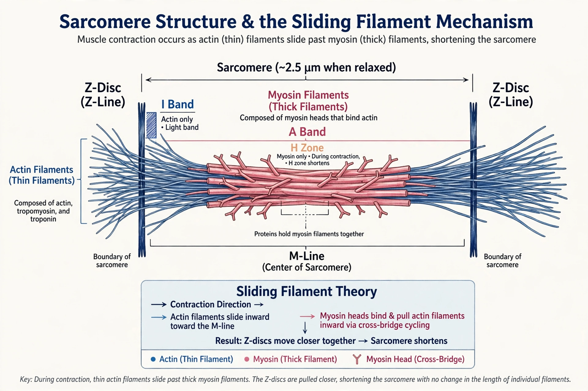

Muscle contraction
From Wikipedia, the free encyclopedia

Muscle contraction is the activation of tension-generating sites within muscle cells, producing movement or maintaining posture. In vertebrate skeletal muscle it is explained by the sliding filament theory: Myosin heads on thick filaments ratchet along Actin thin filaments, shortening each Sarcomere while the filaments themselves stay the same length.
The sliding filament model
The model was proposed in 1954 by two teams (Hugh Huxley with Jean Hanson, and Andrew Huxley with Rolf Niedergerke) from microscopy of striated muscle. The sarcomere — the unit between Z-discs — contains interdigitating actin and myosin filaments; contraction shortens the I-band and H-zone but not the A-band, the observation that suggested sliding rather than filament shortening.
Excitation–contraction coupling
A motor neuron's action potential triggers release of Acetylcholine at the Neuromuscular junction; the muscle action potential travels down T-tubules, causing the Sarcoplasmic reticulum to release Ca²⁺. Calcium binds Troponin, shifting Tropomyosin to expose myosin-binding sites on actin. Cross-bridges cycle using ATP: myosin cocks, binds, power-strokes and releases. Relaxation requires ATP to pump Ca²⁺ back — its absence after death causes Rigor mortis.
Types and control
Muscles contract isotonically (shortening under load) or isometrically (tension without shortening); individual twitches summate into smooth tetanus. Smooth muscle uses calcium–calmodulin and myosin light-chain kinase instead of troponin, and cardiac muscle is driven by pacemaker cells via gap junctions. Force is graded by motor-unit recruitment and firing rate.